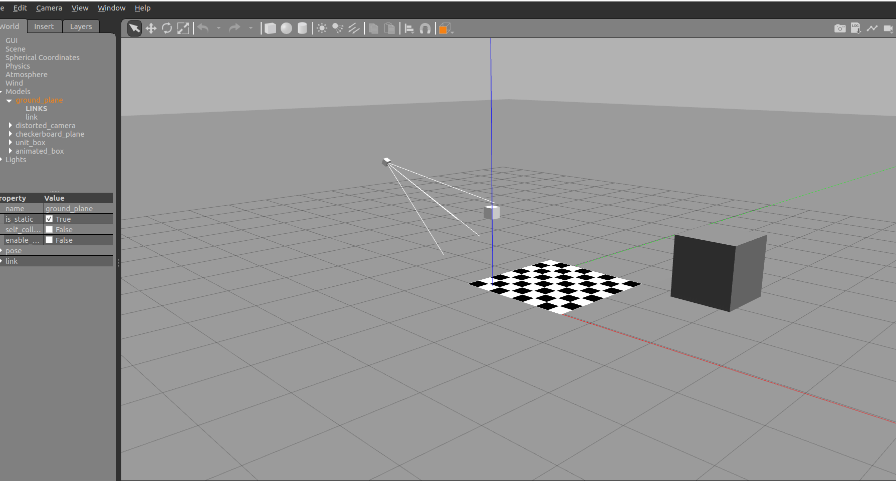
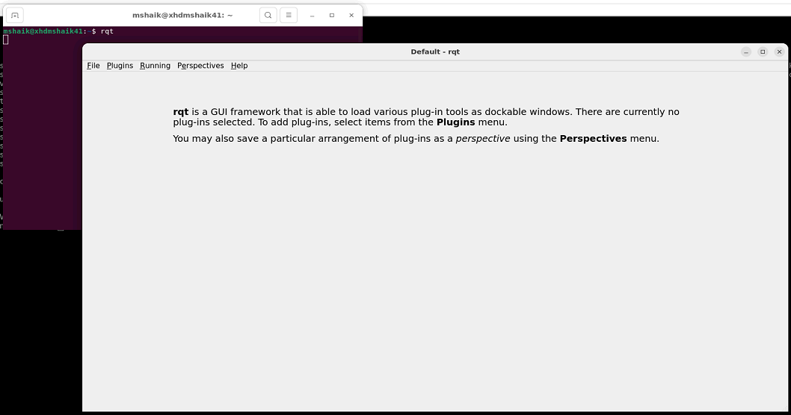
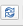
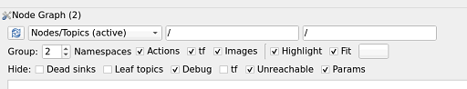
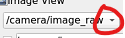
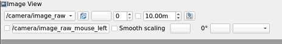

Kria™ KR260 Robotics Starter Kit
|
Setting up the Board and Application Deployment |
Board Setup and Application Deployment¶
Introduction¶
This document shows how to setup the board and environment to execute the Perception stack application.
Pre-requisite¶
Hardware Requirement¶
KR260 Robotics Starter Kit
KR260 Power Supply & Adapter (Included with KR260 Robotics Starter Kit)
Cat 5e Ethernet Cable (Included with KR260 Robotics Starter Kit)
USB-A to micro-B Cable (Included with KR260 Robotics Starter Kit)
16GB MicroSD Cards (Included with KR260 Robotics Starter Kit)
Ubuntu 22.04 workstation(x86 Host) with ethernet port for setting up simulation on Gazebo and Visualizing the simulated nodes on RQT
Environment Setup On Host(x86) Machine(Ubuntu 22.04)¶
Install ROS2 using debian package, see install guide here. Here is the snippet of what is needed for this application:
sudo curl -sSL https://raw.githubusercontent.com/ros/rosdistro/master/ros.key -o /usr/share/keyrings/ros-archive-keyring.gpg echo "deb [arch=$(dpkg --print-architecture) signed-by=/usr/share/keyrings/ros-archive-keyring.gpg] http://packages.ros.org/ros2/ubuntu $(. /etc/os-release && echo $UBUNTU_CODENAME) main" | sudo tee /etc/apt/sources.list.d/ros2.list > /dev/null sudo apt update sudo apt upgrade sudo apt install -y ros-humble-desktop
Install few more dependencies from ros-humble using the following command.
sudo apt install ros-humble-gazebo-ros ros-humble-gazebo-plugins ros-humble-gazebo-msgs
Install Gazebo Classic 11.0, see install guide here.
Get files to setup and run simulation.
git clone https://github.com/Xilinx/kria_ros_perception cd kria_ros_perception rm -rf src/image_proc src/tracetools_image_pipeline src/vitis_common src/tracing src/image_pipeline_examplesInstall Simulation from the following steps.
source /opt/ros/humble/setup.bash # source ROS2 Humble colcon build
Run simulation on workstation.
source install/setup.bash # source the workspace as an overlay ros2 launch perception_2nodes simulation.launch.py
It opens gazebo window showing the simulation world of a pinhole camera capturing a black stationary cube and a small grey cube revolving ontop of a checkered plane as shown below.

Setting up RQT on Host(x86) Machine to view the demo¶
Open new terminal and launch RQT using rqt command as shown below for visualizing the perception graph. It opens a window that appears as shown below:
source /opt/ros/humble/setup.bash # source ROS2 Humble rqt

Click on Plugins -> Introspection -> Node Graph and set the configuration as shown below. Refresh the node graph used  to update to the latest graph while running the demo.

Similarly, enable Visualization plugin from Plugins -> Visualization -> Image View. You can open multiple windows of Image View windows to see multiple images at once. To switch to a different image, click on the dropdown as shown.

NOTE: You are expected to launch as many RQT plugins as required for visualizing the perception show as shown in the below gif animations.
Initial Setup, Setting Up The KR260 Board¶
Go through Booting Kria Starter Kit Linux to complete the minimum setup required to boot Linux before continuing with the instructions in this page.
Get the latest ROS perception application and firmware package:
Download the firmware
Search package feed for packages compatible with KR260
ubuntu@kria:~$ sudo apt search xlnx-firmware-kr260 Sorting... Done Full Text Search... Done xlnx-firmware-kr260-perception/jammy 0.1-0xlnx1 arm64 FPGA firmware for Xilinx boards - kr260 perception application
Install firmware binaries
sudo apt install xlnx-firmware-kr260-perception
Install ROS 2 humble and LTTng
Refer to the ROS 2 Documentation for the installation steps. Here is the snippet of what is needed for this application:
sudo curl -sSL https://raw.githubusercontent.com/ros/rosdistro/master/ros.key -o /usr/share/keyrings/ros-archive-keyring.gpg echo "deb [arch=arm64 signed-by=/usr/share/keyrings/ros-archive-keyring.gpg] http://packages.ros.org/ros2-testing/ubuntu jammy main" | sudo tee /etc/apt/sources.list.d/ros2.list > /dev/null sudo apt update sudo apt upgrade sudo apt install -y ros-humble-desktop sudo apt install lttng-modules-dkms lttng-tools ros-humble-tracetools-launch
Install ROS 2 application
mkdir -p ~/Downloads cd ~/Downloads wget https://github.com/Xilinx/kria_ros_perception/releases/download/xlnx-rel-v2022.1_update4/kria-ros-perception_1.3-1_arm64.deb sudo apt install ./kria-ros-perception_1.0-1_arm64.deb
Disable Gnome desktop GUI
sudo xmutil desktop_disable
Run The Application on KR260¶
This application has two flavours, which are developed in way that you can understand how he can tweak the application to achieve a desired performance during the development. Below are the versions and their details:
NOTE: This application assumes camera resolution to be 640x480, and uses a custom map for rectifying the image
CPU Baseline: This is a simplistic version, where nodes are not accelerated and are executed on CPU. This version should allow you to get familiar with the working environment and understand easiness in working with KRS based applications. Use the following steps to execute:
source /opt/xilinx/kria_ros_perception/setup.bash # enable ROS 2 overlays ros2 launch perception_2nodes trace_rectify_resize.launch.py # launch rectify and resize Nodes on ARM cores
Below is the gif showing the gazebo simulation window(left half) along with RQt window(right half) with node graph and /camera/image_raw, /image_rect and /resize/resize image views. You might need to reload the plugin windows to update the node graph and image views.

FPGA streamline accelerated: In this application, ROS Components
RectifyNodeFPGAStreamlinedandResizeNodeFPGAStreamlinedare redesigned to leverage hardware acceleration. However, besides offloading perception tasks to the FPGA, each leverages an AXI4-Stream interface to create an intra-FPGA ROS 2 communication queue, which is then used to pass data across nodes through the FPGA. This allows to completely avoid the ROS 2 message-passing system and optimizes dataflow achieving a 24.42% total speedup. Steps to launch the streamlined accelerated version are:# streamlined sudo xmutil unloadapp sudo xmutil loadapp kr260-perception # load the accelerator source /opt/xilinx/kria_ros_perception/setup.bash # enable ROS 2 overlays ros2 launch perception_2nodes trace_rectify_resize_fpga_streamlined.launch.py # launch rectify and resize FPGA accelerated Nodes
Below is the gif showing the gazebo simulation window(top half) along with the RQt window(bottom half) with node graph and /camera/image_raw, /image_rect and /resize image views. Since the data is transferred via streaming interface from rectify to resize, no image is seen in the rectify image view. You might need to reload the plugin windows to update the node graph and image views.

NOTE: For benchmark results using Tracetools and other ROS2 acceleration examples, refer to Kria Robotics Stack (KRS).